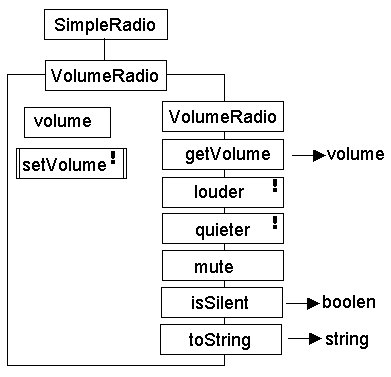

Waypoint 3 is a complete design, build, demonstrate and document exercise.
The specification is to implement and demonstrate a class hierarchy which is concerned with the modeling of a radio. The class hierarchy, indicating that all classes are contained within the radio package, is as follows.
- The SimpleRadio class contains a boolean attribute determining if the radio is turned off or on.
- The VolumeRadio class contains an int attribute determining the loudness of the sound.
- The TuningRadio class contains a double attribute determining the FM frequency.
- The RadioException class allows attempts to set the volume or frequency to inappropriate values to be reported.
The class diagrams of the SimpleRadio and VolumeRadio classes are as follows.

The class diagram for the TuningRadio class will not be given, its description is as follows.
Radio Switched Off The radio is switched off. |
Radio Switched On and silent The radio is switched on. |
Radio Switched On & not silent The radio is switched on. |
The SimpleRadio class and SimpleRadioDemo classes are complete and should not be changed.
The VolumeRadio class is fully implemented but contains errors, the VolumeRadioDemo class is incomplete.
The TuningRadio class and TuningRadioDemo classes are supplied in outline only.
The RadioException class is fully implemented and should not be changed.
All demonstration programs can be executed in their current state.
The deadline for submission of
the report, via the school office (E403) with a yellow front
cover, is
4:30 p.m. on Thursday
18 May 2000.
You report should be bound, contain a contents page and should contain all of the following.
| A corrected listing of the VolumeRadio class. | 15 Marks |
| JSP schematics for the VolumeRadio setVolume() and toString() methods. | 10 Marks |
| A class diagram for the TuningRadio class. | 15 Marks |
| A list of all
methods, including inherited methods (apart from those
inherited from Object), that a TuningRadio instance supplies. |
15 Marks |
| An extended TuningRadioDemo program which demonstrates all methods. | 20 Marks |
| An annotated script output
of the TuningRadioDemo program. (The annotations should clearly show which method is being demonstrated.) |
15 Marks |
| An evaluation (max 2 pages)
describing how many hours you spent on the project, what problems you encountered, how you overcame those problems and what degree of quality you think your submission has. |
10 Marks |
You are reminded that the work submitted must be your own unaided effort.
You will be required to make your source code files available for inspection, including automated anti-plagiarism checking, details of how to do this will be given later. This waypoint is worth 40% of your overall SSD coursework mark, the other 60% is awarded from your waypoint 1 and 2 assessments